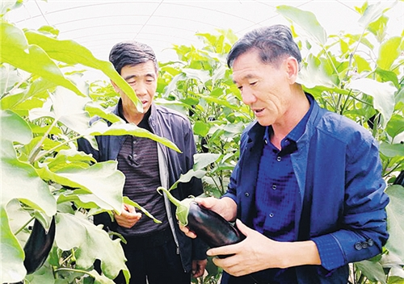

Home Page>>Comments
Hu zhongshan: industrial poverty alleviation "bellwether"

——Record 19 party representatives, gansu gulang county, huanghuatan follow-up industrial cooperative party secretary hu zhongshan
"Find a flat place where the dolls can go to school closer and the elderly can see a doctor more easily." This was the original intention of hu zhongshan, then party secretary of zhaoshanling village, jingquan town, gulang county, gansu province, to lead 48 villagers down the mountain to find their way out in 1996.
He took them to the yellow flower beach at the edge of the tengger desert. "No house, no land, no water. Hu zhongshan led the masses to dig Wells and repair canals, clean the land and set up electricity, and build roads through afforestation.
He began to wonder how he could make the villagers rich. In 2007, with the promotion of the key management of the shiyang river basin and the implementation of the government's policy of supporting facilities for agriculture and animal husbandry, hu zhongshan keenly realized that this was a rare opportunity to lead the whole village people to the road of wealth, so he resolutely put forward the idea of building temperature tents and raising families to get rid of poverty and get rich.
Since 2009, hu zhongshan has been going door to door to mobilize villagers for land allocation, large-scale farming and greenhouse planting. Without start-up capital, hu zhongshan owed 2.7 million yuan worth of building materials on his personal credit, and helped the villagers build 84 breeding greenhouses and 172 acres of sunlight greenhouses. With the shed, he had no money to grow and raise, and he studied the policy again. He contacted everywhere and coordinated 12 million yuan of loans through multi-family joint insurance and small loans for women.
After a year of efforts, the farm warm shed and sunlight greenhouse in huanghua beach immigration village achieved results that year, and smoothly paid off the debt of 2.7 million yuan, and paid off all the loans after 3 years. More and more people are moving down the mountain to see how the villagers can get rich.
Today's yellow flower beach is not the sandy barren land with sparse vegetation. After coming down from the soil gate of dingwu expressway, you can see that the roads in the ecological resettlement area of huanghua beach stretch out in all directions, and the houses with white walls and painted tiles are arranged in order. Driving along, I saw the warm sheds standing side by side, the roadside trees and lush shade, the sound of books in the school, laughter in the square, more than 50,000 people who had moved down from the deep mountains, fulfilling their dream of poverty alleviation.
In 2013, hu zhongshan began to serve as party secretary of huanghuatan eco-migrant follow-up industry professional cooperative. "Raising sheep and planting greenhouses may seem simple, but to make money you have to work very hard. You have to do everything from building a shed to planting and breeding." In order to let the immigrant masses get rid of poverty and become rich, hu zhongshan went out of the greenhouse into the sheep shed and devoted himself to the cause of eliminating poverty and becoming rich.
Under the leadership of him and the party committee of the cooperative, the ecological resettlement area in huanghuatan has been divided into functional areas according to different planting and breeding varieties. There are 32 professional planting and breeding cooperatives of various types. The annual trading volume of the cattle and sheep trade market reaches 400 million yuan.